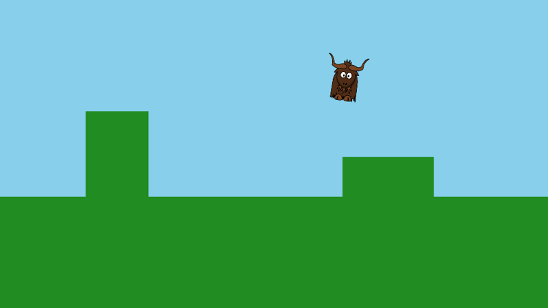

Yak Run, part 2: running and jumping
In part 1 the yak stood still. Now it runs, jumps, falls and lands, and bumps into things. Along the way you will see how yak2D's update loop and input work.

You will learn: reading the keyboard and gamepads, "held" versus "pressed" input, fixed update steps, simple platform physics with collisions, and animating a sprite by stretching it.
The finished code for this part: code/YakRun/Part2.
A box type
Platforms and the yak's collision area are all rectangles, so we start with a small rectangle type. Create Box.cs:
using System.Numerics;
namespace YakRun;
// An axis-aligned rectangle in world units. World space has +Y pointing up,
// so Bottom is the smaller Y value and Top the larger
public readonly record struct Box(float Left, float Bottom, float Width, float Height)
{
public float Right => Left + Width;
public float Top => Bottom + Height;
public Vector2 Centre => new Vector2(Left + (0.5f * Width), Bottom + (0.5f * Height));
public static Box FromCentre(Vector2 centre, float width, float height) =>
new Box(centre.X - (0.5f * width), centre.Y - (0.5f * height), width, height);
// Strict inequalities, so boxes that are only touching (e.g. standing on the ground) do not overlap
public bool Overlaps(Box other) =>
Left < other.Right && Right > other.Left && Bottom < other.Top && Top > other.Bottom;
}
Remember that in yak2D's world space +Y is up, so a box's Bottom is its smaller Y value. Overlaps uses < and > rather than <= and >=, so a yak standing exactly on top of a platform is touching it, but not overlapping it.
The Yak class
Create Yak.cs. The yak has a position, a velocity, and a few tuning numbers.
Tuning
// The collision box. The sprite is drawn a little larger than this
public const float Width = 64.0f;
public const float Height = 60.0f;
private const float SpriteWidth = 84.0f;
private const float SpriteHeight = SpriteWidth * (228.0f / 256.0f); // keep the texture's aspect ratio
private const float RunSpeed = 380.0f; // units per second
private const float Acceleration = 2600.0f; // units per second, per second
private const float Gravity = 2400.0f;
private const float JumpSpeed = 960.0f;
private const float MaxFallSpeed = 1500.0f;
Positions are in world units, which at the camera's zoom of 1 are the same size as screen pixels in a 960 x 540 window. Speeds are in units per second, and accelerations in units per second per second. These numbers are simply what felt good: try changing them.
State
public Vector2 Position; // centre of the collision box, in world units
public Vector2 Velocity;
public bool OnGround { get; private set; }
private float _runCycle; // advances while running, drives the bobbing animation
public Box Bounds => Box.FromCentre(Position, Width, Height);
public Yak(Vector2 start)
{
Position = start;
}
Position is the centre of the yak's collision box. It is a field rather than a property so that Position.X += ... works on the Vector2 directly.
Moving
// moveInput is -1 (left) to +1 (right). Called once per fixed update step
public void Update(float seconds, float moveInput, bool jumpPressed, IReadOnlyList<Box> platforms)
{
// Ease towards the target running speed, so starting and stopping feel smooth
Velocity.X = MoveTowards(Velocity.X, moveInput * RunSpeed, Acceleration * seconds);
if (jumpPressed && OnGround)
{
Velocity.Y = JumpSpeed;
}
Velocity.Y = MathF.Max(Velocity.Y - (Gravity * seconds), -MaxFallSpeed);
// Move one axis at a time, pushing the yak back out of anything it now overlaps
Position.X += Velocity.X * seconds;
foreach (var platform in platforms)
{
if (Bounds.Overlaps(platform))
{
Position.X = Velocity.X > 0.0f ? platform.Left - (0.5f * Width) : platform.Right + (0.5f * Width);
Velocity.X = 0.0f;
}
}
Position.Y += Velocity.Y * seconds;
OnGround = false;
foreach (var platform in platforms)
{
if (Bounds.Overlaps(platform))
{
if (Velocity.Y < 0.0f)
{
Position.Y = platform.Top + (0.5f * Height); // landed on top
OnGround = true;
}
else
{
Position.Y = platform.Bottom - (0.5f * Height); // bumped our head
}
Velocity.Y = 0.0f;
}
}
var running = OnGround && MathF.Abs(Velocity.X) > 10.0f;
_runCycle = running ? _runCycle + (seconds * 16.0f) : 0.0f;
}
private static float MoveTowards(float current, float target, float maxChange)
{
var difference = target - current;
return MathF.Abs(difference) <= maxChange ? target : current + (MathF.Sign(difference) * maxChange);
}
This runs once per update step. seconds is the length of the step, so multiplying every speed and acceleration by it makes the yak move at the same real-world speed whatever the step length.
- Horizontal speed eases towards the target (
moveInput * RunSpeed) at a fixed rate, so the yak takes a moment to get going and to stop. - Jumping only works when standing on something: it sets an upward velocity.
- Gravity pulls the velocity down every step, up to a maximum falling speed.
- Collisions are handled one axis at a time. First the yak moves horizontally; if it now overlaps a platform, it is pushed back to the platform's side. Then it moves vertically; if it overlaps, it is pushed out above (it has landed) or below (it bumped its head). Handling the axes separately means the yak slides neatly along floors and walls.
Note
By default yak2D runs updates at a fixed 120 steps per second, independently of how fast frames are drawn. Physics like this behaves identically on every computer. yak2D may occasionally run one shorter step just before a frame is drawn, to keep motion smooth, which is another reason to always use the seconds value you are given. See Application lifecycle: Update timing.
Drawing
public void Draw(IDrawing draw, IDrawStage stage, ITexture texture)
{
// A little squash and stretch: bob while running, stretch upwards while in the air
var bob = MathF.Sin(_runCycle);
var scaleX = OnGround ? 1.0f + (0.05f * bob) : 0.9f;
var scaleY = OnGround ? 1.0f - (0.07f * bob) : 1.12f;
var width = SpriteWidth * scaleX;
var height = SpriteHeight * scaleY;
// Keep the sprite's feet on the bottom of the collision box whatever its height
var centre = new Vector2(Position.X, Position.Y - (0.5f * Height) + (0.5f * height));
// Lean in the direction of travel (rotation is clockwise, in radians)
var lean = 0.15f * (Velocity.X / RunSpeed);
draw.Helpers.DrawTexturedQuad(stage,
CoordinateSpace.World,
texture,
Colour.White,
centre,
width,
height,
depth: 0.5f,
layer: 2,
rotation_clockwise_radians: lean);
}
The yak is one still image, but a little squash and stretch makes it feel alive:
- While running, a sine wave bobs its width and height in opposite directions, so it looks like it is bounding along.
- In the air it is stretched tall and thin.
- It leans in the direction it is moving, using the quad's
rotation_clockwise_radians.
Because the height changes, the sprite's centre is moved so its feet stay on the bottom of the collision box. The yak is drawn on layer 2, which will keep it in front of the level we build in part 3.
Changes to Game.cs
Fields and start up
// Game state
private Yak _yak;
// The solid things the yak can stand on: the ground and two blocks
private readonly List<Box> _platforms = new List<Box>
{
new Box(-480.0f, -600.0f, 960.0f, 525.0f),
new Box(120.0f, -75.0f, 160.0f, 70.0f),
new Box(-330.0f, -75.0f, 110.0f, 150.0f),
};
// yak2D resources
private ITexture _yakTexture;
private IDrawStage _drawStage;
private ICamera2D _camera;
public StartupConfig Configure()
{
return StartupConfig.Default(960, 540, "Yak Run", false);
}
public void OnStartup()
{
_yak = new Yak(new Vector2(-100.0f, -45.0f));
}
The platforms are plain C# data: the ground and two blocks to jump on. The Yak is created in OnStartup(). Game objects like these are ordinary C# objects, not yak2D resources, so they survive a graphics device reset untouched.
Reading the controls
public bool Update(IServices yak, float secondsSinceLastUpdate)
{
var input = yak.Input;
if (input.WasKeyPressedThisFrame(KeyCode.Escape))
{
return false;
}
var (move, jump) = ReadControls(input);
_yak.Update(secondsSinceLastUpdate, move, jump, _platforms);
return true;
}
private static (float move, bool jump) ReadControls(IInput input)
{
var move = 0.0f;
if (input.IsKeyCurrentlyPressed(KeyCode.Left) || input.IsKeyCurrentlyPressed(KeyCode.A)) move -= 1.0f;
if (input.IsKeyCurrentlyPressed(KeyCode.Right) || input.IsKeyCurrentlyPressed(KeyCode.D)) move += 1.0f;
// "Pressed this frame" is only true for the first update after the key goes down,
// so holding space does not make the yak bounce continuously
var jump = input.WasKeyPressedThisFrame(KeyCode.Space) ||
input.WasKeyPressedThisFrame(KeyCode.Up) ||
input.WasKeyPressedThisFrame(KeyCode.W);
// Any connected gamepad works too: left stick to run, A to jump
foreach (var id in input.ConnectedGamepadIds())
{
var stick = input.GamepadAxisValue(id, GamepadAxis.LeftX);
if (MathF.Abs(stick) > 0.25f)
{
move = stick;
}
jump |= input.WasGamepadButtonPressedThisFrame(id, GamepadButton.A);
}
return (Math.Clamp(move, -1.0f, 1.0f), jump);
}
public void PreDrawing(IServices yak, float secondsSinceLastDraw, float secondsSinceLastUpdate) { }
yak2D's input service can answer three questions about each key or button:
| Method | True for | Used for |
|---|---|---|
IsKeyCurrentlyPressed |
every update while the key is down | running |
WasKeyPressedThisFrame |
only the first update after it goes down | jumping |
WasKeyReleasedThisFrame |
only the first update after it comes up |
Using "pressed this frame" for jumping means holding space makes one jump, not a jump every time the yak lands.
Gamepads work the same way, using an id for each connected pad. The left stick's X axis gives a value from -1 to 1, so a gentle push makes a gentle run. Values near zero are ignored, because sticks rarely rest exactly at zero.
Important
"This frame" means this update step. Always check pressed and released in Update(), not in Drawing(). See Input.
Drawing
public void Drawing(IDrawing draw, IFps fps, IInput input, ICoordinateTransforms transforms, float secondsSinceLastDraw, float secondsSinceLastUpdate)
{
foreach (var platform in _platforms)
{
draw.Helpers.DrawColouredQuad(_drawStage, CoordinateSpace.World, Colour.ForestGreen,
platform.Centre, platform.Width, platform.Height, 0.9f);
}
_yak.Draw(draw, _drawStage, _yakTexture);
}
The platforms are drawn as green rectangles, from the same Box data used for collisions, and then the yak draws itself.
Run it
Arrow keys (or A and D) to run, space (or up, or W) to jump. Jump onto both blocks, and try walking into the tall one.
Tip
Try making the yak float like it is on the moon (lower Gravity), or turn it into a speed demon (raise RunSpeed). What happens if Acceleration is very low?
Next
In part 3 we build a proper level with scenery, a camera that follows the yak, stars to collect and a finishing line.